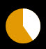

Meter=Roundline displays a single circular line that rotates around a point based on the measure value.
Options
- General meter options
-
All general meter options are valid.
MeasureName-
Name of the measure whose percentual value controls the angle of rotation. The measure must be able to return percentual values.
LineWidth Default: 1-
Width of the line.
LineLength-
Length of the line. The length is always measured from the center of rotation (regardless of the
LineStart option).
ControlLength, LengthShift-
If ControlLength is set to 1, the measure value controls the
LineLength from LineLength to LineLength + LengthShift.
LineStart-
Defines the distance from the center at which the line starts.
ControlStart, StartShift-
If
ControlStart is set to 1, the measure controls the LineStart from LineStart to LineStart + StartShift.
StartAngle-
The starting angle for the line. This is in radians and the zero angle is at the right. The default rotation direction is clockwise.
ControlAngle, RotationAngle-
Unless
ControlAngle is set to 0, the measure controls the RotationAngle from 0 to RotationAngle. The size of the rotation angle for the line. Use a negative value for counter-clockwise rotation.
ValueRemainder-
Use remainder instead of the actual measured value. This can be used to draw an analog clock.
LineColor-
The Color of the line.
Solid-
Set to 1 and the meter will draw a pie-chart instead.
Remarks
The angle of the line is determined by the measure. By default, the minimum position is pointing to the right, the line then moves clockwise until it is pointing to the right again.
If the width and height are not defined, the center point is at the X and Y position of the meter and any part of the meter that intersects with the edges of the skin window will be cut off. If width and height are specified, the center point will be in the middle of the bounding box and the skin window will include the meter.
Example
{% highlight ini %}
[Rainmeter]
Update=1000
DynamicWindowSize=1
[MeasureDisk]
Measure=FreeDiskSpace
Drive=C:
InvertMeasure=1
[MeasureBackground]
Measure=Calc
Formula=1
[MeterBackground]
Meter=Roundline
MeasureName=MeasureBackground
X=0
Y=0
W=50
H=50
StartAngle=4.712
RotationAngle=6.283
LineLength=25
LineColor=226,153,3,255
Solid=1
AntiAlias=1
[MeterDisk]
Meter=Roundline
MeasureName=MeasureDisk
X=0
Y=0
W=50
H=50
StartAngle=4.712
RotationAngle=6.283
LineLength=25
LineColor=255,255,255,255
Solid=1
AntiAlias=1
{% endhighlight %}

An example skin demontrating a Roundline meter.